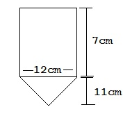
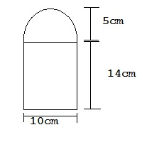
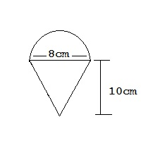

13th Mar, 24 (Afternoon) --Math--
- Find the mean:
| Hours |
1 - 5 |
6 - 10 |
11 - 15 |
16 - 20 |
| Bikes |
7 |
3 |
5 |
3 |
- Booking charge of hotel for a event is $170 and it cost $3.14 each bedroom used. What would be the total cost for booking hotel and using 46 rooms for a event.
- Find the mean:
| Sun |
Mon |
Tue |
Wed |
Thu |
Fri |
Sat |
| 18 |
22 |
13 |
16 |
9 |
10 |
20 |
- Find the area of the given shapes. (Π 3.14)
- 
- 
- 
- A bus start to travel at 1615 hrs and arrived at destination at 1730 hrs. If bus covered 25 km distance find the speed of bus.
- The distance between point A to point B is 3.6 km. If the map scale is 1:35000. Find the map distance between them in cm.
- Orange, pink and red balls are in a ratio of 5:1:4. If 460 balls are there in total. Find the number of orange ball.
ii. Each orange ball is bought at $3.16 and sold for $9.07. Find the total profit from all orange balls.